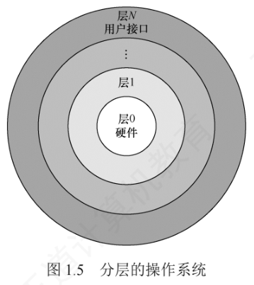
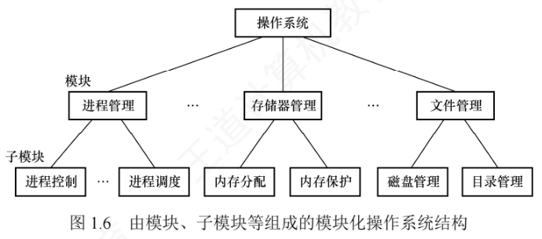
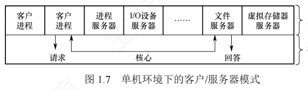

1.4 操作系统结构
随着操作系统功能不断扩展、代码规模持续增长，采用合理的结构设计对降低系统复杂度、提升安全性和可靠性至关重要。本节覆盖两类视角：一是经典的设计方法（分层法、模块化），二是从内核架构出发的三种形态（宏内核、微内核、外核）。
1. 分层法
分层法把操作系统划分为若干层次：最底层（层 0）为硬件，顶层（层 N）为用户接口，各层只调用紧邻下层提供的功能与服务（单向依赖）。

优点：
- 便于调试与验证：系统可自底向上逐层开发与测试——层 1 完成且验证无误后再开发层 2（它只依赖已验证的下层），后续各层依此类推；某层出错时，错误必然定位在该层内部，因为它的所有下层都已通过验证；
- 易于扩充与维护：只要保持层间接口不变，就可以独立修改、替换或新增某一层的实现，不影响其他层次。
问题：
- 层次划分困难：合理界定各层功能边界较复杂，且依赖关系一旦固化，系统架构可能缺乏灵活性；
- 运行效率较低：执行一个高层功能通常要穿越多个中间层，每层的参数传递与控制转移都引入额外开销。
2. 模块化
模块化把操作系统按功能划分为若干具有一定独立性的模块：每个模块实现特定的管理功能，并明确定义与其他模块的接口、通过接口通信；模块还可进一步细分为子模块并规定子模块间的接口——这种设计方法称为模块-接口法。

划分模块时要注意粒度：模块过小，虽然单个模块复杂度低，但模块间交互频繁、整体复杂度上升；模块过大，则内部结构复杂、难以维护。同时要高度重视模块独立性——独立性越高、相互依赖越少，系统结构越清晰。衡量模块独立性的标准有两个：
- 内聚性：模块内部各组成部分间联系的紧密程度。内聚性越高，模块独立性越好；
- 耦合度：模块间相互依赖和影响的程度。耦合度越低，模块独立性越好。
优点：①提高操作系统设计的正确性、可理解性和可维护性；②增强系统的可适应性、便于功能扩展；③支持并行开发、加速操作系统研制进程。
缺点：①模块间的接口规定很难满足对接口的实际需求；②各模块设计者齐头并进，每个决定无法建立在上一个已验证的正确决定的基础上，找不到一个可靠的决定顺序。
3. 宏内核
从内核架构看，操作系统可分为宏内核和微内核两类。
宏内核（也称单内核或大内核）把系统的主要功能模块集成在一个紧密耦合的整体中、运行于内核态，为用户程序提供高效的系统服务。由于各模块共享地址空间、可直接调用彼此的函数，省去了上下文切换和消息传递的开销，因此性能高。
但随着体系结构和应用需求的发展，操作系统要提供的服务日益复杂、代码规模急剧膨胀，导致系统维护困难、可靠性下降，面临典型的「软件危机」。为提升模块化、可扩展性与安全性，微内核技术应运而生：只把最基本的功能（如进程调度、进程间通信等）保留在内核，把文件系统、设备驱动等非核心服务移到用户态运行。
从发展现状看，主流操作系统（Linux、Windows、Android）主要采用宏内核或混合内核架构，在保持高性能的同时吸收微内核的部分设计理念；例如 macOS 和 iOS 的 XNU 内核就融合了 Mach 微内核与 BSD 宏内核的特性。宏内核与微内核并非对立，而是相互借鉴、融合发展。近年来随着对安全性和可验证性的重视，微内核重新受到关注——谷歌 Fuchsia 和华为 HarmonyOS NEXT 都采用微内核架构。
4. 微内核
（1）微内核的基本概念
微内核架构把操作系统最基本的功能保留在内核，把其他非核心功能移至用户态运行，以降低内核复杂性。移出的功能被组织成若干独立的服务程序，运行在用户态，它们之间以及与客户进程之间的交互都通过微内核提供的消息传递机制完成。
微内核只实现操作系统最核心的机制，通常包括：①与硬件紧密相关的部分；②基本的资源管理机制；③客户与服务器间的通信支持。操作系统的绝大部分功能放在微内核外的一组服务器（进程）中实现、运行在用户态，如进程/线程服务器、虚拟存储器服务器等。

在微内核结构中，只有微内核运行在内核态，其余模块都运行在用户态。因此某个模块（如文件服务器）发生故障时，只有该模块崩溃，系统可通过重启该服务恢复，不会导致整个系统宕机；相比之下，宏内核中文件系统运行在内核态，其崩溃将直接引发系统崩溃。
（2）微内核的基本功能
微内核操作系统遵循「机制与策略分离」的设计原则：与硬件紧密相关的机制置于微内核，策略交由用户态服务器实现。进程管理、存储器管理和 I/O 管理等功能都被拆成两部分——机制留在微内核，策略由外部服务器实现；由于服务器通常远大于微内核，这使微内核得以保持极小规模。微内核通常具备以下功能：
- 进程（线程）管理：微内核提供进程/线程的创建、切换、调度队列管理等机制，而进程分类、优先级分配等策略由用户态的进程管理服务器实现；
- 低级存储器管理：微内核只包含与硬件相关的地址转换机制（如页表管理、逻辑地址到物理地址的映射），页面置换算法、内存分配策略等由用户态的存储器管理服务器实现；
- 中断和陷入处理：微内核负责捕获硬件中断和陷入事件，识别类型后分发给相应的用户态服务器处理。中断与陷入的捕获及分发机制属于微内核的核心功能。
（3）微内核的特点
优点：
- 扩展性和灵活性：新增或修改功能只需调整相应服务器，无须改动内核；
- 可靠性和安全性：用户态服务的故障不会导致系统崩溃，且攻击面更小；
- 可移植性：只有微内核包含硬件相关代码，其余服务器与平台无关，便于移植；
- 分布式计算：客户/服务器间通过消息传递通信，易于扩展到网络环境。
缺点：性能问题——每次服务请求需要多次穿越内核态与用户态，导致系统调用延迟增加。为缓解此问题，部分现代系统采用混合内核设计，在保留微内核思想的同时把高频服务移入内核以提升性能，但这又会使内核容量明显增大。尽管如此，微内核凭借高可靠性和可验证性，仍广泛应用于可靠性要求极高的关键任务领域，如实时操作系统、工业控制、航空航天及军事等。
5. 外核
传统操作系统通过抽象层向应用程序提供统一接口，外核（exokernel）则采用截然不同的思路：把物理资源直接暴露给用户级系统，自身只负责资源的安全分配与隔离。
外核是运行在内核态的极小程序，核心职责是把底层硬件资源（磁盘块、内存页、网络包缓冲区等）划分为互不重叠的子集并分配给不同的用户级系统——例如一个用户级系统分到磁盘的 0～1023 块，另一个分到 1024～2047 块。外核通过权限检查机制确保各用户级系统只能访问被明确授权的资源、防止越权访问。在外核之上，可在用户空间构建库操作系统（library OS），自主实现文件系统、进程调度、虚拟内存管理等传统操作系统功能；由于库操作系统直接操作物理资源、无须经过传统内核强制性的抽象层，避免了不必要的数据拷贝、地址转换和上下文切换开销，显著提升系统性能与灵活性。
外核机制的主要优点：
- 减少抽象开销：传统操作系统强制引入虚拟内存、虚拟文件系统等映射层，外核允许用户级系统按需定制资源使用方式，显著降低系统开销；
- 提升灵活性与性能：用户级系统可根据应用特性优化资源管理策略（如数据库可以直接管理磁盘块），充分发挥硬件潜力；
- 清晰分离保护与实现：外核只负责资源保护，功能实现完全放在用户空间，系统结构简洁且易于验证。